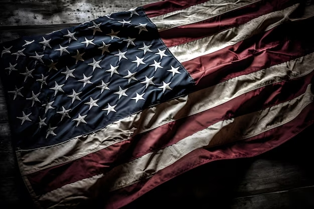

| País | cidades | Eventos Anuais |
|---|
Super BowlO Super Bowl é o evento esportivo mais importante dos Estados Unidos, conhecido não apenas por ser a final do campeonato de futebol americano da NFL (National Football League), mas também por suas apresentações musicais, comerciais marcantes e grande espetáculo de entretenimento. A cada ano, duas equipes se enfrentam em uma partida que atrai uma audiência global imensa. O Super Bowl é muito mais do que apenas um jogo esportivo. A final é precedida por uma semana de festividades, eventos e conferências de imprensa. O halftime show (show do intervalo) é uma das atrações mais aguardadas, com apresentações de artistas de renome que atraem milhões de telespectadores. Além disso, os comerciais exibidos durante o Super Bowl tornaram-se famosos por sua criatividade e alto custo. A final do Super Bowl tem um grande impacto na cultura popular dos Estados Unidos e muitas vezes aborda questões sociais, políticas e culturais relevantes. O evento reúne famílias, amigos e comunidades para assistir ao jogo, seja em casa, em bares ou em festas temáticas. A atmosfera de competição, os momentos emocionantes do jogo e as surpresas do halftime show fazem do Super Bowl um dos eventos mais esperados e assistidos em todo o país. |  |
|---|